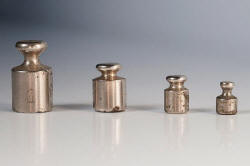
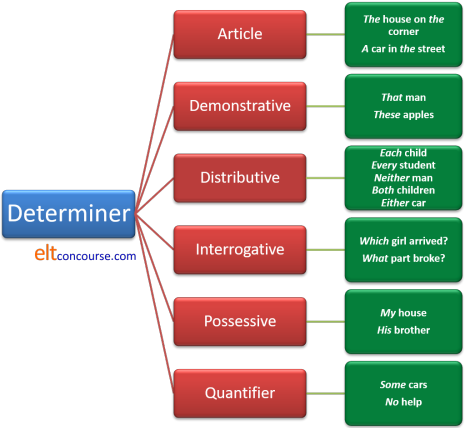
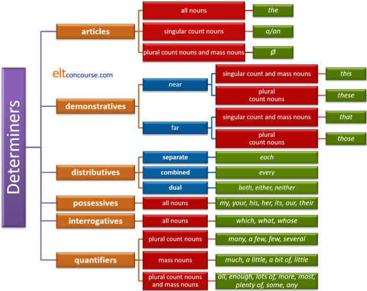

Determiners
Determiners are the language's gatekeepers – they control how
noun phrases are seen.
For example, the difference between:
Pass me a hammer
and
Pass me that hammer
is only discernible if you understand the function of the two
determiners (a and that).
This is an area of grammar and lexis where what you understand depends on whom you read. Authorities differ in what a determiner actually is and in many cases in how to analyse and classify them. The following is not intended to be an original contribution to this debate but to set out an analysis which can be used for teaching purposes. There are references at the end to other sources you may like to consult.
In simpler times, this class of words was divided and separately identified in terms such as demonstratives, possessive adjectives, articles and so on and that is still a valid but somewhat inexact way to analyse the area. There is a separate guide to the article system on this site, linked at the end in the list of related guides, and the following will not cover the ground again.
If you have followed the essential guide to determiners, some of what follows may be familiar. Treat it as revision.
 |
Definitions |
It's actually rather hard to define 'determiner' except by exemplification but, briefly:
- they are words which precede nouns and noun phrases and control the way they are intended and perceived
- they form a closed-class set of words (unlike, e.g., adjectives) to which it is vanishingly rare to add new members
One meaning of the verb determine in English is to limit
the scope of or fix something and that, indeed, is what determiners
do.
So, as a definition we will use:
A determiner is a word which specifies, limits, identifies or quantifies a noun or noun phrase.
By this definition, articles, quantifiers, demonstratives, interrogative words and possessives are all forms of determiners. There, alas, the consensus view stops.
We should pause briefly to consider what we mean by determination here because it occurs in two ways:
- In a sentence such as
Old people are quite vulnerable to crime
the noun people is certainly being determined by the adjective old. It is not, however, in our terms a determiner in itself.
The adjective, old, is, in this case, acting to identify and limit the noun, people, so its function is determining. It is, however, not a determiner in terms of word class or lexical category.
However, in:
Those old people are quite vulnerable to crime
we have the demonstrative, determiner, those, limiting rather than qualifying the noun and that is a determiner function. - In:
She was that close to complaining to the boss
we have the word that functioning to modify the adjective close but it is not determining a noun phrase so is not, by our analysis a determiner. But in:
It was that luxurious car that he stole
we have the word functioning to limit the noun phrase and that is the role of determiners.
Briefly, what we are doing here is distinguishing between a
determining function (all the examples) and a determinative
grammatical function which only applies to noun phrases and is a
limiting factor on how they are understood.
In some analyses, the terms determiner and
determinative are used interchangeably, or at least
synonymously, but others will distinguish between a determiner
(which may be almost any word which limits or identifies a noun) and
a determinative proper which can only be part of a noun phrase.
We shall persist here in referring to the grammatical rather than
semantic function of these lexemes as determiners in general and,
for the most part, ignore other types of words which may determine a
noun in some way but do not function as determinatives.
This is, incidentally, not a topic on which it is wise to spend too
much classroom time.
For more, see Huddleston et al (2002).
 |
Count and mass (or non-count) nouns |
There is a clear and very important distinction in English between count nouns such as table which can appear in the plural (tables, chairs, dogs, cattle, feet, webs etc.) and mass nouns which cannot (information, luggage, anger, applause etc.). If you want to know more go to the guide to countability, linked in the list at the end.
To see the significance of this concerning the allowed determiners, put any of the words in black into the gaps in the three sentences.
Words: no, enough, this, those, each
- __________ food in the cupboard was wasted.
- __________ tins of beans were thrown away
- __________ loaf of bread went mouldy.
Click here when you have an answer.
| Unacceptable | Acceptable |
| *enough loaf *this tins *those food *those loaf *each food *each tins |
enough food enough tins this food this loaf those tins each loaf |
and no
can fill any of the gaps.
This is significant, of course, and results in a good deal of error
from our learners because the system is neither very predictable nor
particularly intuitive.
 |
Six types of determiners |
To remind you of what we are dealing with very briefly, here is a run-down of the six types of determiner that this guide will consider in one way of another.
- Quantifiers
This is the largest group and also the group which evinces the most confusion in learners of English because they are unpredictable in behaviour. - Articles
There are only three of these in English and they have a guide to themselves so they will be considered here only in passing. - Demonstratives
There are usually only four to consider, this, that, these, those, but there is a bit more to it as we shall see. - Distributives
Some analyses do not recognise these as a separate class of determiner but they have characteristics in common which means that, for teaching purposes, they are often handled together. - Interrogatives
These are confined to three forms: which, what, whose, and are straightforward to understand and teach. - Possessives
These used to be called possessive adjectives but they aren't adjectives and do not work like adjectives so they are considered here.
| To start you off, try a test to make sure
you can match the six types to examples of them in clauses. If you can't you should go to the essential guide to determiners which explains things more simply and remind yourself. Simply shut that guide to come back here. |
 |
Determiners classified by grammatical function |
According to Quirk et al, 1972, there are six classes of determiners defined by the way in which they are used with the three types of noun: singular, plural and mass or non-count.
We can visualise the situation by what appears in each cell of
this table in which:
yellow = singular countable (e.g., fact)
blue = plural countable (e.g., facts)
red = mass or non-count nouns (e.g., information)
Like this:
| fact | information |
| facts |
Most authorities will agree that all the examples below in
the third column are
called determiners but some stop there and some will include
other types of noun modifiers as determiners.
We have taken the liberty of including a fifth column with some
possible additions to some categories although these are
disputed in some analyses.
| Class | Possible combinations | Examples | Notes | Possible additions | |||
| A |
|
the, possessives (my, your etc.), no, whose, which(ever), what(ever), * some, any | These words can all appear with all three types of noun. | No additions | |||
| B |
|
Ø (zero article), some, any, enough | These cannot occur with singular count nouns and some and any are unstressed. | all, most, more, a lot of, lots of, plenty of | |||
| C |
|
this, that | These two demonstratives can only appear with singular count and mass nouns. | No additions | |||
| D |
|
these, those | These two demonstratives can only appear with plural count nouns. | few, a few, both, many, several, a good / great many, a large number of, 1, 2, 3, 4 etc. | |||
| E |
|
a(n), every, each, either, neither, one | These can only appear with singular count nouns. | No additions | |||
| F |
|
much | This word only appears with mass nouns and usually in negative and interrogative clauses. | little, a little, less, least, a bit of, a great amount of, a good / great deal of |
* Some and any can only be used with the singular count nouns when they are stressed (e.g., some fact!, any port in a storm).
If you would like that table as a PDF document, it's available here.
|  |
Quantifiers |
Most of the additions above are quantifiers of some sort. These
fall into three main categories: quantifiers proper, phrasal quantifiers
and partitives.
Here's a list of quantifiers with their prototypical uses. Do
not try to teach them all at once.
| Count nouns only | Mass nouns only | Unrestricted use | |||
| 1, 2, 3, 4 etc. | †(n)either | a bit of | 0%, 10%, 60% of etc. | certain | none of |
| †a couple of | few | a little | ½, ¼ of etc. | enough | plenty of |
| a few | fewer | a little bit of | a good deal of | heaps of | quantities of |
| a good / great many | fewest | least | a great deal of | loads of | some |
| a number of | many | less | the / a plethora of | lots of | the / a lack of |
| another | neither | little | a quantity of | masses of | the / a majority of |
| any / the number of | numbers of | much | all | more | the / a minority of |
| †both | several | part of | the / an amount of | most | the remainder of |
| each | various | the whole | any | no | the rest of |
Some notes |
- The list of quantifiers which only occur with mass nouns is very restricted: there are fewer than 10 and that's a teachable area in a single lesson.
- Of the very common quantifiers:
- many, a few, few and several only occur only with plural count nouns.
- much, a little and little only occur only with mass
nouns.
- Note that a few = several but few = not many
It was good to see a few people at the match vs. It was disappointing to see few people at the match - a little = some but little = not much
I'm happy there was a little left for me vs. I'm disappointed there was little left for me - several is very rarely used with a determiner (e.g., the several people we met) and much is almost never used that way
- Note that a few = several but few = not many
- Expressions with bit and part appear in the
mass-only column but, providing the item is divisible into smaller
parts, can be used with count nouns as in, e.g.:
I have only read a bit / part of his book
I have broken a bit of the table
Indivisible nouns are not usually permitted with this quantifier so we cannot have:
*I only want a bit / part of the chairs - Modification of quantifiers is common and there are some
examples in the list above. We can also have, e.g.:
a huge number of people
a vast amount of beer
a tiny minority of the people
etc. - Three quantifiers are only used for dual numbers: both, either and neither. Many languages retain a longer list of dual-number determiners and pronouns (as, incidentally, did Old English).
- less is used informally with count nouns but little
and ?least are not permitted so we may hear:
There are less people here today
but not:
?The least chairs are in that room
*There are too little books in the library
Using few, fewer, fewest is the safe bet for countable nouns. - Phrasal quantifiers come in three sorts:
- occurring only with mass nouns:
a good / great deal of, a large / small/ amount of + information - occurring only with plural count nouns:
a good / great / large / small number of + facts - occurring with both mass nouns and plural count nouns:
plenty of, a lot of, lots of + facts / information
- occurring only with mass nouns:
Altogether now |
It is possible to present the data somewhat differently and conflate determiners and quantifiers, like this:
| Item | Singular count nouns | Plural count nouns | Mass nouns |
| Ø (zero article) | |||
| a bit of | |||
| a part of | |||
| a few | |||
| a good / great amount / deal of | |||
| a great many | |||
| a large / great / good number of | |||
| a little | |||
| a lot of | |||
| a(n) | |||
| all | |||
| any | |||
| both | |||
| each | |||
| either | |||
| enough | |||
| every | |||
| few | |||
| little | |||
| lots of | |||
| many | |||
| more | |||
| most | |||
| much | |||
| neither | |||
| no | |||
| one | |||
| plenty of | |||
| possessives (my, your etc.) | |||
| several | |||
| some | |||
| that | |||
| the | |||
| these | |||
| this | |||
| those | |||
| what(ever) | |||
| which(ever) | |||
| whose |
A table like this, or an edited version, may be helpful for learners but it clouds the water a little because it treats all six types of determiners in the same table and also includes some phrasal quantifiers.
 |
Partitives and measures |
As we saw in the guide to countability, there are times when we want to make a mass noun countable. There are four ways to do this which avoid the informal expressions such as two teas, three sugars:
- General terms:
a bit of
an item of
two bits of
three pieces of
etc. which can apply to a wide range of nouns and are rarely restricted.
These are useful general words which can be used with almost any mass noun to make it countable. They are, however, sometimes considered informal or imprecise. - Typical terms which only apply to certain mass nouns, determined
usually by physical appearance and nature of the item:
a slice of cake / bread / cheese
a bar of chocolate / soap / gold
a cup of tea / coffee / soup
a carton of cigarettes / milk / eggs
The number of terms with which such words naturally collocate is a measure of their range and varieties of English vary in their use. - Measures:
pint of milk / beer / oil
tablespoonful of tea / sugar / salt
kilo of meat / potatoes / plastic
pound of tomatoes / flesh / coffee
handful of grapes / coins / earth
etc.
Which partitive is appropriate to use depends on the nature of the mass noun. - Restricted partitive expressions which apply to only a few
substances and sometimes are unique to one substance such as:
a side of beef
a rasher of bacon
a blade of grass
etc.
There is a separate guide to partitives and classifiers, linked from the list of related guides at the end.
Expressions with and without of |
Expressions with of, such as:
a few of
many of
some of
less of
two of
function differently from the determiners without of.
This is not merely a technical difference because it affects
both meaning and the grammar of the language, particularly the
ordering of determiners.
- The expressions with of function as
generalised partitives because they represent a
selection from a larger number.
Partitives function as pre-determiners so, just as we can have, e.g.:
three rashers of that bacon
two balls of this wool
a pile of my books
a sheet of the paper
and so on, we can also use the items as generalised partitives and have:
many of her friends
less of the whisky
some of her language
and so on.
The ordering of the items is:
Expression with of + Central determiner
so the first phrase is acting as a pre-determiner.
(For more on pre- and post-determiners, follow the link to the separate guide at the end.)
The distinction between the quantifiers plus of and generalised partitives proper lies in the fact that the former cannot be pluralised so while we allow, e.g.:
a bit of information
some pieces of information
a pile of books
four piles of books
and so on, no parallel constructions can be used with the quantifiers except the fractional ones. - The expressions without of are true
quantifiers, not partitives.
We can, for example have:
his many friends
in which his is the central determiner and many is the post-determiner and we can also have parallel structures such as:
my two letters
their few ideas
these many reasons
the six-hundred soldiers
and so on, in all of which the first determiner is central and the second is a post-determiner quantifying the noun phrase.
The ordering of the items is:
Central determiner + Post determiner
so the first phrase is acting as a determiner and the second as a post-determiner.
Article determiners |
Articles have their own guide on this site because their use is complex, especially for those learners whose first languages manage perfectly well without them or in which the system is very different (i.e., most of them).
Very briefly indeed, there are three choices for article use in English:
- a/an
- for single count nouns with indefinite specific
reference as in:
A letter came for you
Can you lend me a pound?
etc. - for generic reference with singular count nouns as in:
A hippopotamus can be dangerous
- for single count nouns with indefinite specific
reference as in:
- the
- for definite specific reference with all nouns as in:
The letter has arrived
The Smiths have arrived
The milk has gone off
etc. - for generic reference with singular count nouns as in:
The internet has changed people's lives
- for definite specific reference with all nouns as in:
- Ø (the zero article)
- for indefinite specific reference with mass or plural
countable nouns as in:
People arrived
Furniture is expensive in my country - for generic reference with plural count and mass nouns
as in:
Water can damage carpets
Cars pollute - for specific definite reference with proper nouns as in:
Mars is known as The Red Planet
David will help with that
- for indefinite specific reference with mass or plural
countable nouns as in:
For much more detail see the guide, linked below, to the article system in English.
 |
Demonstrative determiners |
We saw above that the demonstrative determiners (which used to be called demonstrative adjectives) can function with both mass and count nouns but with differences. They are derived from the same source as the definite article incidentally.
- Number and noun use
this and that occur with singular count and mass nouns
these and those occur with plural count nouns - Deixis
this and these refer to item near the speaker (called the proximal use)
that and those refer to item far from the speaker (called the distal use)
Old English, in common with many modern languages including Spanish, Portuguese, Italian, Georgian, Basque, Korean and Japanese had a third, medial, distinction which means the languages can refer to objects near the speaker, objects near the hearer and objects far from both the speaker and the hearer.
English can do this but requires a periphrastic form to make the distinction clear so we have:
this car (proximal and near the speaker)
that car (medial and far from the speaker but possibly close to the hearer)
and
that car over there (distal and far from both speaker and hearer)
The distinction still exists in the old fashioned determiner yonder and in the dialect term yon which are distal demonstrative determiners.
German uses the same form for the demonstrative determiners that and those as the definite article but when it means that or those rather than the, it is stressed. - Referencing
Only that and those can be used to refer anaphorically to a previous noun or nominal clause. For example:
There was a crash on the motorway and that accident caused a long delay
There were lots of customers and some of those people had to wait a while
All four are used cataphorically to refer to what follows because demonstratives and most other determiners precede the noun phrase in English. - With pre-determiners
All four can be used with pre-determiners so we hear, e.g.:
both those cars
all these people
half that cake
double that number
three times those amounts
a third of this work
etc.
And also with pre-determining quantifiers:
lots of that money
most of these people
little of that furniture
few of those ideas
etc.
Modification of demonstrative determiners is restricted otherwise and we do not allow:
*such that cake
*so these people
*fairly that amount
*good that cake
*wonderful this film
*the that car
*a this man
etc.
There are some other determiners, often not analysed as demonstratives which, nevertheless, work in a very similar way to identify or limit the noun phrase and add precision:
- the former and the latter
These two words work in a very similar fashion so we have, e.g.:
Peter and John came late but the latter guest at least apologised
Mary had a thought and John presented another suggestion but the former idea was accepted
This use is somewhat formal, even slightly stilted. The advantage of using former and latter, however, is that neither is affected by considerations of location, number or mass vs. count-use nouns.
These two words do, however, require a predetermining article, the, unlike the demonstrative determiners proper we analysed above. - other
also functions in a similar way and requires a definite article pre-determiner:
This isn't working so pass me the other drill - another
is written as one word in English having long since (in the early 13th century) been combined with the indefinite article:
She broke a vase so went to the cupboard for another container for the flowers - ordinal numbers
Words such as first, second, fifth etc. also require a pre-determining article but follow a similar pattern. E.g.:
We have a number of problems. The first issue is that ..., the second complication is that ...
etc. - some adjectives
Some identifying adjectives follow a similar pattern and serve to limit and define as in, e.g.:
The difficult tasks we do at once, the impossible challenges take a bit longer
All these quasi demonstrative determiners can also be pronouns (in
which case, the other is often paired with the
one) but the
restrictions on use carry over to the pronoun forms.
In particular, none can be uses cataphorically and all are confined
to anaphoric referencing.
The word that causes some problems for many learners (and teachers) because it can perform four distinct grammatical functions:
- A determiner
As in this guide - A pronoun
As in:
Pass me that - An adverb
As in:
They can't be that rich - A conjunction
As in:
She told me that I was being unfair
The other demonstratives are not quite so confusing but they can, as we saw, all be pronouns as well as determiners.
 |
Distributives |
A small class of determiners are described as distributive
because they refer to individual items or people in a group.
They can, for semantic reasons, only be used with count nouns
because that is their role. It also means that the verb form
is singular in most cases of their use.
They are:
- each
- refers to all the individuals in a group separately so the
noun is always singular when the distributor appears alone.
For example:
Each child was given a take-home present
Each computer has been upgraded separately
The word can be used with or without the of-phrase so we allow:
Each child went to a different class
Each of the children went to a different class
but the of-formulation requires a plural count noun. - every
- is similarly distributive but consider the group as a whole
rather than focusing on the individuals in it. This means
that some uses realised with each are excluded from use
with every. For example, we allow:
Every child was given a take-home present
Every computer has been upgraded separately
but we do not allow:
Every child went to a different class
to mean the same as the example above because it now suggests that all the children went together to a different class rather than going separately.
The of-formulation is also not allowed so we do not encounter:
*Every of the children went home.
and the word is always followed by a singular count noun.
The other distinction from each is that every must refer to a group of three or more and cannot be used when the choice is dual. So, for example, while:
I held a glass in each hand
is acceptable, we do not allow:
*I held a glass in every hand - both
- This determiner is usually considered a pre-determiner (and
is treated below in that way). However, it functions for
dual numbers only in the same way that every functions
for all plurals insofar as it is inclusive.
By definition, it is only used with plural count nouns but mass nouns are often made countable when the determiner is used as in, for example:
We drank both wines with dinner. - either
- In English, when combined with or this is an
exclusive conjunction but as a determiner, it is not exclusive
so, for example:
Either restaurant will do
means both are acceptable and
You can take either book
means both books may be taken.
It only refers to dual number but the noun, when the word appears alone, is always singular.
This determiner cannot be pre-modified but with the of-formulation can act as a pre-determiner and is exclusive so we encounter:
Either of the two men will be elected (but not both)
and in this case, a plural count noun must be used. - neither
- excludes both options
so:
Neither restaurant will do
means they are both unacceptable.
This also occurs with the of-formulation:
Neither of the sons inherited the house
And, like either, refers only to dual number with the of-formulation requiring a plural count noun.
Other distributive expressions |
Multipliers such as three times, twice, once, four times etc. can
predetermine noun phrases to form a variety of temporal rather than
personal distributives.
For example:
once every term
three times a year
six times each month
20 times per century
A slightly odd distributive occurs with the word head as
in
Entrance is six dollars a / per head
where the phrase a / per head is not alterable so we cannot
have
*Entrance is six dollars every / each head.
You may discover other determiners described as
distributives, including half, all and both.
While such items can appear in pseudo-distributive expressions such
as:
I gave half the children lunch
She talked to both the children
All the children got a toy
they are not true distributives. On this site, they are
analysed as pre-determiners, which is what they are.
There is a guide to such things, linked below.
Concord with distributives |
Concord with distributives is sometimes slightly tricky, even for native speakers. This is especially the case when the of-formulation is used.
Most will accept:
Each house is painted a different colour
Every house is painted a different colour
but not:
Each house were painted a different colour
Every house were painted a different colour
However, when we see or hear:
Each of the houses were painted a different
colour
the case is not so obvious and many will accept the plural concord
because of the proximate plural noun. In formal language, the
singular is always preferred.
The situation does not arise with every because the of-formulation is not available and the verb is always seen in the
singular. However, pronoun use is a different matter and we
will usually encounter:
Every student in the department must hand in their essays
on time
Formally, either and neither also require a
singular verb form so:
Either of the houses suits me
Neither of the houses suits me
Either book contains the data I need
Neither book contains the data I need
are all acceptable and correct.
However, the plural form is often encountered in, e.g.:
Either of the larger houses suit me
Neither of the two houses I saw were what I wanted
both of which are considered substandard and avoided in all but the
most informal language.
Interrogative determiners |
This is a simple set of three determiners which are straightforward (mostly) to teach and learn. As the name suggests, these determiners occur in question forms and signal the subject of the question.
- whose
refers to possession (or other characteristics such as origin or description) as in, e.g.:
Whose coat is that?
Whose letter did she receive?
Whose policy requires this? - which
implies a limited choice so in, e.g.:
Which train did he take
the suggestion is that the questioner has a limited number of options in mind. - what
implies a more open-ended selection so, for example:.
What train did he take?
suggests that the questioner has no idea at all and there is an almost unlimited range of possible responses
These three determiners also occur in reported questions:
They asked me
which house she bought
He wanted to know
what
beer they sold there
Mary asked
whose
coats they were
The good news for learners is that none of the words can be predetermined and there are no restrictions concerning countability or number.
There are some issues, however:
- Having learnt that in English we use the relative pronoun
who for people and reserve, usually, which for inanimate
entities or lower animals, some learners are naturally tempted
to carry the rule over to the determiner system and produce,
e.g.:
*Who police officer told you that? - The distinction between a limited and more open-ended choice
with which and who is not simple to understand
for many learners whose first languages do not require this
consideration so unnatural utterances such as:
Which colour is his car?
often result. - Native speakers do not abide by the rules and, e.g.:
What main course have you chosen?
is perfectly acceptable although the choice is clearly limited and many speakers would select which in this case. - When the choice is confined to very small numbers, the only
determiner allowable is which as in:
Which wine would you prefer? Red or white?
but native speakers will disagree about where the cut-off point falls in the selection of the determiner and the grey area is quite large.
Possessive determiners |
These are another simple set to teach and learn although the
defectiveness of the system in English puzzles some learners whose
languages are more sophisticated and complete in this regard.
The defectiveness of the system is revealed by the fact that:
- English makes no distinction in terms of number or gender of
the noun phrase so we get:
my sister
your sisters
his brother
their parents
our dog
and so on, all of which would demand a different determiner form in many languages. - English only distinguishes the subject of the clause with
three determiners which change for gender: his, her and
its.
All other possessive determiners are unchanged whatever the gender or number of the subject of the clause.
That is not the case in many languages. - Only the third-person possessive determiners alter to show
the number of the clause subject so his, her and
its change to their for the plural regardless,
incidentally, whether the subject is animate or inanimate.
Again, this is very defective in comparison to many other languages.
Where English does score over some languages is in terms of
having an almost complete system in the pronoun forms which parallel
the determiners.
Other languages may use the determiner and the pronoun
interchangeably but English insists on my-mine, your-yours,
his-his, her-hers, our-ours, their-theirs but, confusingly,
lacks any pronoun at all for the determiner its.
Possessive determiners in English can co-occur with some
pre-determiners so we allow:
half my money
all her time
both her sisters
etc. and with quantifiers as in:
many of her friends
some of my money
a few of her family
but quantifiers with possessive determiners always require the
of-formulation.
However, unlike many languages, the possessive determiners in
English cannot be pre-determined with an article, an interrogative a
distributive or a demonstrative determiner so we do not allow:
*the my car
*which my pen?
*each my houses
*that my coat
etc.
 |
Pronouns |
Almost all determiners can also function as pronouns (providing the reference is clear):
| Determiners | Pronouns |
| You can have either cup | You can have either |
| You can have one glass | You can have one |
| Can I have that puppy? | Can I have that? |
| Have you got enough butter? | Have you got enough? |
| There's plenty of bread | There's plenty |
| You can have a bit of bread | You can have a bit |
| These eggs have gone off | These have gone off |
But some small changes such as dropping the of are required because no pronoun permits the of-phrase use.
Briefly:
- Articles and the possessives determiners cannot be pronouns. They
can only function as determiners. What used to
be called possessive
adjectives should now be referred to as possessive determiners. In
some analyses, the pronouns one and ones are
considered the pronoun equivalent of indefinite articles as in, for
example:
Do you want a biscuit?
Yes, I'll have one - All demonstratives can function as pronouns so we allow:
Have one of those
Pass me that
Give her these
Take those
I prefer the latter
I think the former is nicer - Of the distributives, only every can
never function as a pronoun
so we allow:
I gave a book to each
She didn't accept either
They wanted neither
She claimed both
but not:
*I gave a book to every
To read more about pronoun uses of these kinds of word,
go to
the guide to indefinite / impersonal pronouns linked in the list at the
end. There, you will find a list of the words which can
act as determiners or pronouns, those (few) which are only pronouns and those
(few) which are only determiners.
If you would like a list of determiners which also act as pronouns as a PDF
document,
click here .
Summaries
Here's a brief summary for learners:

and here is a rather more complete (but still incomplete) and
complicated diagram for you:

There are links to lists of determiners, quantifiers and pronouns on the function word list page.
 |
Pre- and post-determiners |
If you have followed so far, you will probably have noticed that determiners rarely co-occur. We cannot, for example, have:
- *the a car
- *that the man
- *my the house
etc. This restriction, incidentally, does not exist in many other languages.
However, there is a distinct class of determiners which function
to modify other determiners. What is included in this
class is a matter of some disagreement. There is
a separate guide to pre- and post-determiners
on this site linked in the list at the end and the approach taken there is to consider first which determiners most authorities will
agree can function as pre-determiners and then to consider some more
marginal cases which, at least for teaching purposes, can be analysed
in the same way.
A short list of some pre- and post-determiners and examples is below.
Ordering determiners |
Even between languages which have a determiner system akin to
English, the order in which they occur often differs and this
accounts for some error when the order from first languages is
transferred into English.
One way of examining the issue is to distinguish not only between
pre-determiners and determiners proper as we have done but also to
consider central and post-determiners.
Here are some examples and a rule of thumb for the ordering of
determiners.
| pre-determiners | central determiners | post-determiners |
| multipliers | articles | numerals / quantifiers |
| both and all | demonstratives | sequencers |
| fractions | possessives | many |
So we get, for example:
double my salary
both my next emails
half the previous email
all her many friends
all those people
the next three books
and so on.
When post-determiners co-occur, the numeral will always come
directly before the noun phrase so we get, e.g.:
the next three people
not
*the three next people
Languages differ in this respect.
 |
Pronouncing determiners |
Determiners are function words and, as is the case with most function words, subject to a good deal of weakening and syllable reduction when they occur in connected speech. Not producing the weakened forms often contributes substantially to a recognisably foreign accent.
The guide to connected speech has more on this issue in general but here are some obvious areas for classroom treatment:
- The articles in English are almost always reduced in some
form in connected speech so, e.g.:
the garden is pronounced as /ðə.ˈɡɑːd.n̩/
a car as /ə.kɑː/
and so on but it is worth helping learners to notice that a fuller form of the definite article is retained before vowels so, e.g.:
the engine is pronounced as /ði.ˈen.dʒɪn/ (but still not as /ðiː.ˈen.dʒɪn/) - Quantifiers, likewise are pronounced with weakened vowels in
many cases so, for example:
some dogs is pronounced as /səm.dɒɡz/
and syllable reduction is noticeable on, e.g.:
several times which is pronounced as /ˈse.vrl̩.ˈtaɪmz/ or /ˈse.vrəl.ˈtaɪmz/
All the of-formulations are pronounced routinely with the weakened form of of so, e.g.:
a lot of money is pronounced as /ə.lɒt.əv.ˈmʌ.ni/ with the weakened form of the article as well. - Of the demonstrative determiners only that is
routinely weakened so we get:
that house pronounced as /ðət.ˈhaʊs/ - The Distributive every is also subject to syllable
reduction so, e.g.:
every person is pronounced as /ˈev.ri.ˈpɜːs.n̩/. - Because the interrogative determiners are the subjects of clauses, they are rarely reduced in connected speech as they are when they form part of a clause elsewhere.
- Of the possessive determiners, our is rarely
produced as /ˈaʊə/ but usually as /ɑː/, your is usually
reduced to /jə/ and my is frequently reduced to /mə/
rather than being pronounced as /maɪ/.
The /h/ on his and her is often elided altogether.
All of these issues deserve some classroom attention because overly exact pronunciation is foreign to English-speakers ears.
Problems for learners |
As the name implies, determiners control how we think about nouns and noun phrases and how our language uses determiners may well influence how we think. This, of course, depends on the answer to an as yet unanswered question about the connection, if any, between thought and language and the direction of causality. For more, see the guide to language, thought and culture, linked below.
Determiners in English require speakers to consider a number of attributes of a noun which are not necessarily parallelled in other languages. If one accepts the hypothesis that language determines some of the ways we think, this is a serious conceptual hurdle for some learners to overcome.
- Indeterminacy and specificity
In English, before we can use a noun successfully, we have to take note of whether we are talking about a specific instance of the noun or the noun in an indefinite sense. Many languages, some believe most, do not force speakers to make this kind of decision and speakers of those languages (which include most Slavic languages, Chinese languages, Japanese and Turkish as well as many others) may be ill equipped to think in those terms.
For example, the distinction between:
A man came to the door
and
The man came to the door
is one which a native speaker of English will instantly grasp but which may be obscure to those whose first languages do not use both definite and indefinite articles.
Equally, the distinction between:
What do you want?
and
Which do you want?
may also be obscure. - Countability
In English, speakers are constrained by issues of countability and mass concepts in selecting appropriate determiners and, again, this distinction is not one shared by many languages. The distinction between, e.g.:
Have we enough?
There's a little
and
Have we enough?
There's a few
will often be opaque to learners whose first languages do not force them to make decisions about countability.
By the same token, the difference between
several times
and
some times
may also be obscure and difficult to grasp. - Here or there
English distinguishes only between proximal and distal nouns so we can talk about, e.g.,
this house
these people
and
that house
those people
and know what we mean.
Other languages do things differently and some have a distinction between near the speaker vs. far from the speaker and near the hearer vs. far from the hearer that English does not encode in the language.
Other languages may also distinguish items far from both speakers or near to one but not the other. This can cause some difficulty in choosing the correct determiner. - Partitives
English, as we saw above, uses specific partitives with certain types of noun, so we can have, e.g.:
a pile of coins
but not
*a pile of water
because of the nature of the noun.
Again, other languages do things differently and some, such as the Chinese languages and Japanese, have very sophisticated and complex classifying systems which depend on a range of noun attributes. In such languages, it is not possible even to count items unless one knows what sort of items one is counting.
The concept of partitives will not be hard to grasp but the realisation of them is difficult for all learners.
| Related guides | |
| the word-class map | for links to guides to the other major word classes |
| articles | for a guide focused only on this troublesome area |
| partitives and classifiers | for more about how English selects appropriate partitives and rarely uses classifiers per se |
| quantifier list | for a PDF list of quantifiers in English with notes on usage taken from the table in this guide |
| indefinite / impersonal pronouns | many determiners also act as pronouns. This guide explains more with a list of what's what. |
| pro-forms | for a guide to how substitution works (and links to other pronoun guides) |
| countability | for a guide to an area which affects the choice of determiner |
| concord | for a guide which considers some of the issues which arise when determining the correct verb form |
| pre- and post-determiners | for the guide to these which are only touched on here |
| language, thought and culture | for a guide to how our first language(s) may affect how we think and vice versa |
| function word list | a list of lists including determiners, pronouns and other function words |
References:
Chalker, S, 1987, Current English Grammar, London: Macmillan
Huddleston, R and Pullum, GK et al, 2002, The Cambridge
Grammar of the English Language, Cambridge: Cambridge University Press
Quirk, R, Greenbaum, S, Leech, G & Svartvik, J, 1972, A Grammar of
Contemporary English,
Harlow: Longman